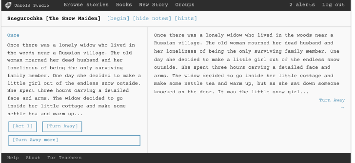

Unfold Studio
A web app for reading and writing interactive stories, designed for interdisciplinary computer science and AI.

Teachers use Unfold Studio for…
- Introductory computer science, grounded in students’ lives and identities.
- Interdisciplinary CS in English/Language Arts classes
- Analyzing social reality in a sociology class
- CS teacher preparation
- Restorative justice
- Fan fiction